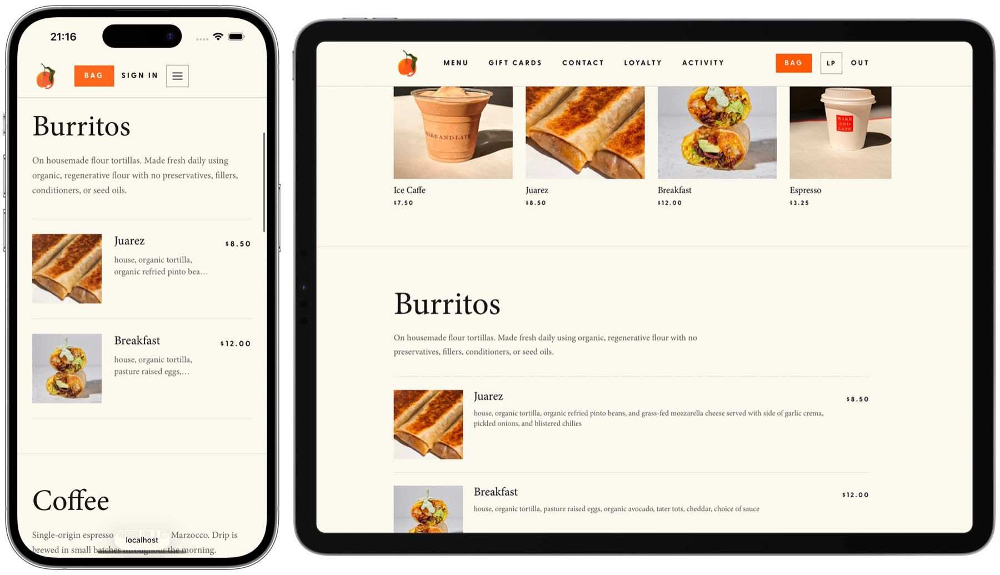

Open SDK
A software development kit from the restaurant technology company Open that gives every restaurant a codebase of its own, built by coding agents on a shared foundation.
Books, buildings, machines, and art.

A software development kit from the restaurant technology company Open that gives every restaurant a codebase of its own, built by coding agents on a shared foundation.